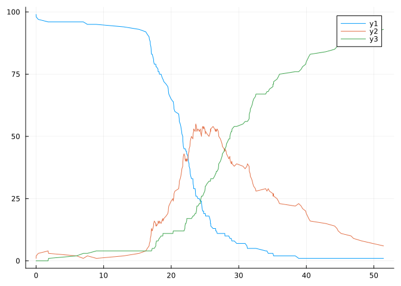
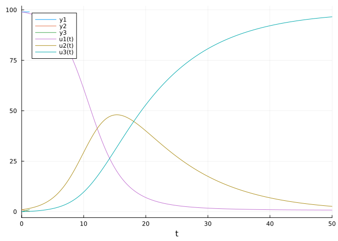
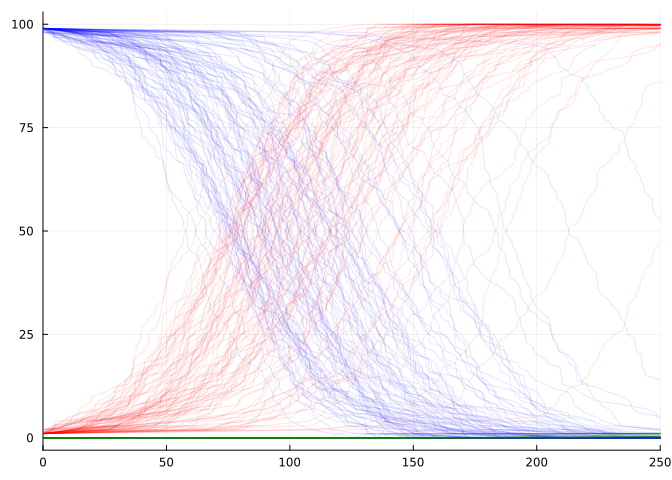

SIR_state = @NamedTuple begin
t::Real
S::Int
I::Int
R::Int
endNamedTuple{(:t, :S, :I, :R), Tuple{Real, Int64, Int64, Int64}}The goal of this notebook is to derive the \(Q\) matrix (aka. Infinetestimal generator Matrix) from data generated by a gillespie simulated CTMC model of a SIR disease process.
To begin, lets define the disease model.
The SIR compartmental model features 3 compartiments (Susceptible, Infectious, and Recovered) though which N individuals pass between (i.e. \(S + I + R = N\)) over time. To impliment this, lets define a type to represent the state of an SIR system at time t, \(X(t) = \{S, I, R\}\).
SIR_state = @NamedTuple begin
t::Real
S::Int
I::Int
R::Int
endNamedTuple{(:t, :S, :I, :R), Tuple{Real, Int64, Int64, Int64}}
Lets initialise a population of N = 100 individuals, one of who is infected and the remaining 99 are Susceptible along with a data frame to record the state at time t = 0.
X0 = SIR_state([0.0,99,1,0])
using DataFrames
SIR_CTMC = DataFrame(
t = Vector{Float64}(),
S = Vector{Int64}(),
I = Vector{Int64}(),
R = Vector{Int64}())
push!(SIR_CTMC, X0)| Row | t | S | I | R |
|---|---|---|---|---|
| Float64 | Int64 | Int64 | Int64 | |
| 1 | 0.0 | 99 | 1 | 0 |
In an SIR system there are two possible events that can occur after a certain time \(\Delta t\): infection (i.e. an individual moves from the Susceptible compartment to the Infectious compartment) \(X(t + \Delta t) = \{s-1, i + 1, r\}\) and recovery \(X(t + \Delta t) = \{s, i-1, r +1\}\). Lets define these as triples which we can add to our SIR_State variable
SIR_events = (
infection = [-1, 1, 0],
recovery = [0,-1,1]
)(infection = [-1, 1, 0], recovery = [0, -1, 1])Only one event can occur at a time* which event will occur? Epidemiologcal theory tells us that, assuming homogenous mixing of infectious and susceptible individuals there will be \(S \times I\) opportunities for contact. Only a proportion of these opporunities will result in infection, so let the parameter \(\beta\), the ‘transmission rate’ l modulate this.
p = (
β = 0.5,
γ = 0.1
)(β = 0.5, γ = 0.1)Simiularly, we’ll specify a constant parameter, , which will modulate the rate of recovery. Lets define a ‘transition’ function which, given a state \(X(t) = \{s, i,r\}\) will return the ___ of each event occurring
function Transition_Function(X, p)
(β, γ) = p
(t,S,I,R) = X
N = S + I + R
infection = (β/N)*S*I
recovery = γ*I
[infection,recovery]
end;Ok thats enough setting up, lets simulate the evolution of the system throrugh time.
Delta t will have an exponential distribution with parameter \(1/\sum{a+b}\)
using Distributions
Δt = rand(Exponential(1/sum(Transition_Function(X0,p))))1.2516405535145618Next we need to determine which event will happen. The probability of a transition will be given by the proportion of the
Pt = Transition_Function(X0,p)
Pi = Pt[1]/sum(Pt)
Pr = Pt[2]/sum(Pt)0.16806722689075632To sample one event with probability weighting according to its relative propensity,
r= rand()
i = 1
cw = Pt[1]
while cw < r && i < length(Pt)
i += 1
@inbounds cw += Pt[i]
end
Δx = SIR_events[i]
Xt = SIR_state(collect(X0) + [Δt; Δx])
push!(SIR_CTMC, Xt)| Row | t | S | I | R |
|---|---|---|---|---|
| Float64 | Int64 | Int64 | Int64 | |
| 1 | 0.0 | 99 | 1 | 0 |
| 2 | 1.25164 | 99 | 0 | 1 |
We’re going to want to run this stepping process a number of times, so lets repeat the process until some specified time (\(t_{end}\)) is reached
tend = 50
t = Xt[1]
while t < tend
Δt = rand(Exponential(1/sum(Transition_Function(Xt, p))))
Pt = Transition_Function(Xt,p)
Ptn = Pt ./ sum(Pt)
i = 1
cw = Ptn[1]
while cw < rand() && i < length(Ptn)
i += 1
@inbounds cw += Ptn[i]
end
Δx = SIR_events[i]
Xt = SIR_state(collect(Xt) + [Δt; Δx])
push!(SIR_CTMC, Xt)
t = Xt[1]
endlets plot the results for a clearer picture
using StatsPlots
@df SIR_CTMC plot(:t, [:S, :I, :R] )
The probability that a susceptible individual will become infected \(p_{s-1, i+1}\leftarrow{s, i} = \frac\)
Since \(R = S+I -N\), se can represent the state of the system with \(\{S, I\}\), where \(S \in \{0,1, ... , N-I-R\}\), \(I \in \{0,1, ... , N-S-R\}\).
for example, when N = 3, we can represent the system with a graph:
As a discrete time process this Markov chain can be represented by the transition matrix \[ p = \begin{bmatrix} \end{bmatrix} \]
looks reasonable. How about in comparison to the deterministic ODE solution
using DifferentialEquations
function SIRModel!(du, u, p, t)
S, I, R = u
β, γ = p
du[1] = -β*S*I
du[2] = β*S*I-γ*I
du[3] = γ*I
end
p = [.005,.1]
u0 = [99,1,0]
tspan = (0.0, 50)
prob = ODEProblem(SIRModel!, u0, tspan, p)
sol = solve(prob)
plot!(sol)
They’re not identical but maybe this is to be expected given the small sample size. We could inrease the sample size (which extended to would equal the ODE), but lets instead perform the N = 100 simulation a few more times.
For convenience I’ll wrap the whole simulation in a function which takes initial conditions and parameters in and outputs the data
function SIR_sim(X0::Vector{Int64}, tmax::Float64, p::Vector{Float64} )
N = sum(X0)
Xt = SIR_state([0; X0])
SIR_events = (
infection = [-1, 1, 0],
recovery = [0,-1,1]
)
function Transition_Function(X, p)
(β, γ) = p
(t, S,I,R) = X
infection = β/N*S*I
recovery = γ*I/N
[infection,recovery]
end
SIR_CTMC = DataFrame(
t = Vector{Float64}(),
S = Vector{Int64}(),
I = Vector{Int64}(),
R = Vector{Int64}())
push!(SIR_CTMC, Xt)
t = Xt[1]
tmax = tmax
while t < tmax
Pt = Transition_Function(Xt, p)
Ptn = Pt ./ sum(Pt)
i = 1
cw = Ptn[1]
while cw < rand() && i < length(Ptn)
i += 1
@inbounds cw += Ptn[i]
end
Δx = SIR_events[i]
Δt = rand(Exponential(1/sum(Pt)))
Xt = SIR_state(collect(Xt) + [Δt; Δx])
push!(SIR_CTMC, Xt)
t += Δt
end
return SIR_CTMC
endSIR_sim (generic function with 1 method)and run this 100 times
Sims = DataFrame(
t = Vector{Vector{Float64}}(),
S = Vector{Vector{Int64}}(),
I = Vector{Vector{Int64}}(),
R = Vector{Vector{Int64}}())
for i in 1:100
sim = SIR_sim([99,1,0],
250.0,
[.05, .001])
push!(Sims.t, sim.t)
push!(Sims.S, sim.S)
push!(Sims.I, sim.I)
push!(Sims.R, sim.R)
end
plot()
for i in 1:length(Sims.t)
global Ploto = @df Sims plot!(:t[i], [:S[i] :I[i] :R[i]],
vars = [:t, :S, :I, :R], linecolor = [:blue :red :green], linealpha = 0.1, legend = false, xlim = [0,250])
end
Ploto
In continuous time, siple transition probabilities are not sufficient to describe the process. We need the Transition rates which are related to the trasition probabilities \[p _ { i j } = \frac { q _ { i j } } { \sum _ { k } q _ { i k } } = \frac { q _ { i j } } { q _ { i } }\] —– Gillespie algorithm
Define event space (Susceptible -> infectious, Infectious -> Recovered) and the propensity function for each event \(p\_{inf} = \beta \times S \times I\) \(p\_{rec} = \gamma \times I\)
Determine the time until the next event (\(\tau\)) by sampling from an exponential distribution with parameter \(\frac{1}{\sum{p}}\)
Determine which event occurs at time \(t + \tau\) by weighting a random sample of \(x\sim unif(0,1)\) according top each event’s propensity and taking the large of the two.
Update time and state to be t + and ___